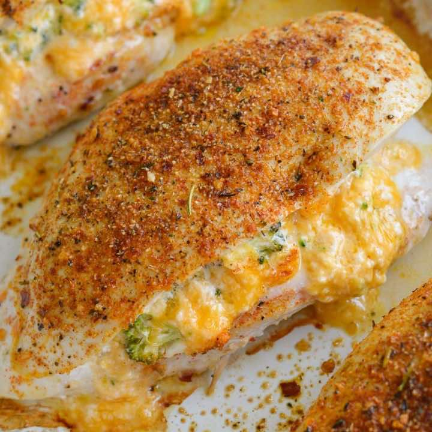

Broccoli and Cheese Stuffed Chicken Breasts
Main DishChicken
Servings4
PrepPT5M
CookPT25M

Ingredients
- 4 small chicken breasts
- 3/4 cup broccoli, chopped
- 1/2 cup shredded cheddar cheese
- 2 ounces cream cheese, softened
- 2 teaspoons cajun seasoning
Directions
- Preheat the oven to 400 degrees F.
- In a small bowl, combine the broccoli, cheddar cheese, and softened cream cheese. Set aside.
- Slice each chicken breast lengthwise so that the breast folds open (be sure not to slice all the way through).
- Spread the broccoli cheddar mixture on one side of the chicken and fold the other side over. Secure the chicken with a toothpick.
- Lightly sprinkle the cajun seasoning on each side of the chicken.
- Place in a greased baking dish. Bake for 25-30 minutes, until the chicken is cooked through.
Source
https://thebestketorecipes.com/broccoli-cheddar-stuffed-chicken-low-carb-keto/?fbclid=IwAR3FjyiU-CawTFBTaGr43pKCrwIibJeCjvHPe-Qk2ndlO0SlrdpADcK_0gs
This page includes Schema.org Recipe structured data for recipe importers.